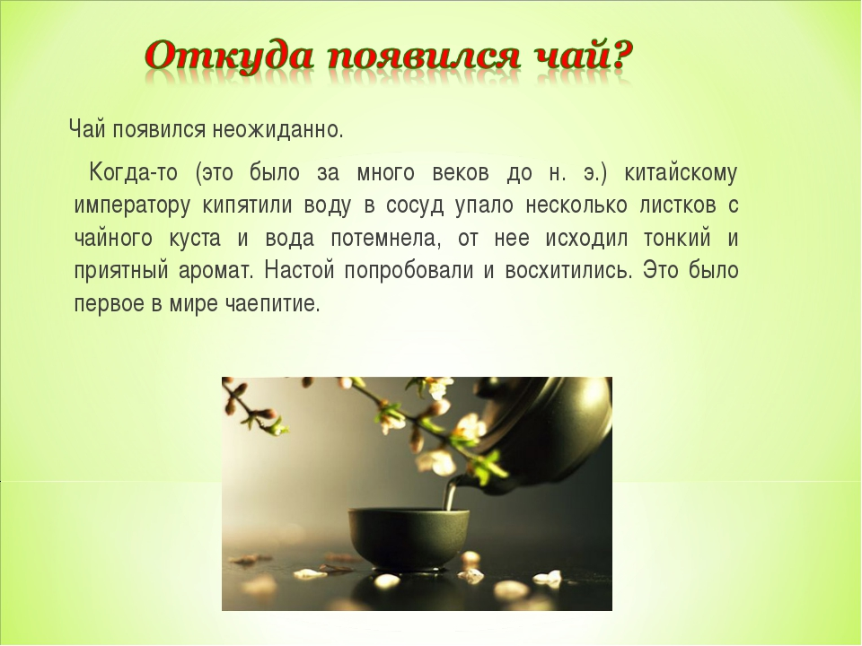

Согласно довольно распространенному мифу, первый мешок чая был подарен одному из русских царей англичанами.
Причем называются то Иван Грозный, то
Петр I, а то и вовсе Федор Иоаннович. А на вопрос что это и откуда,
английский посол ответил, что это, мол, такой китайский напиток,
произнеся название страны как "Чайна".
Все это верно лишь отчасти. Действительно, имеются сведения о том, что русский царь Михаил Федорович Романов получил в подарок несколько ящиков чая. Но не от англичан, а от китайцев. Произошло это в 1618 году. Позднее, несколько пудов чая были переданы в дар от монгольского хана. Тогда же, в середине 17 в. слово "чай" появилось в текстах по медицине.
И по происхождению это слово китайское. Правда в русском языке для обозначения и напитка, и сушеных листьев, и самого растения, используется всего одно слово. В китайском языке существует множество слов, относящихся к чаю. Так, например, слово "ча" - это молодой листик, а "у-ча" - сухой чайный лист.
Ближе всего, по смыслу и по звучанию будет слово, обозначающее напиток из молодых листьев - "чаи", или "чаэ", по-разному произносимое в разных районах северного Китая. Оттуда, через Среднюю Азию, слово и проникло в Россию.
А вот в европейские страны, чай и слово, его обозначающее пришло из Юго-Восточной части страны, где название напитка звучало как "тьа". Это не случайно, ведь англичане и голландцы проникли в страну морским путем, а не по суше, как русские купцы.
За без малого 400 лет в нашей стране сложилась целая культура русского чаепития. Появились новые отрасли - производство самоваров и фарфоровых чайных сервизов. Чай стал неотъемлемой частью русской трапезы, сюжетом живописных полотен. Он стал настолько популярен, что появились подделки. В больших и малых городах открывались чайные.
Еще в начале 19 века предпринимались попытки выращивания чая в Российской Империи. Первое растение было выращено в Крыму, в Никитском ботаническом саду. Документы свидетельствуют, что это произошло в 1817 г. Позднее, чайные плантации появились в Грузии и Азербайджане.
